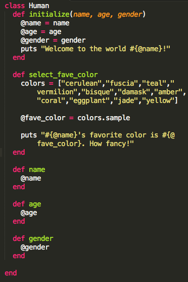

Building Humans
July 27, 2014
Classes are an incredibly powerful way to hold, represent and manipulate data in Ruby. In order to introduce you to classes, let's build some Humans. (I promise it won't be as scary as that sounds.)
We start off by declaring the class. At the bare minimum you probably want a method called initialize that instructs ruby what to do when you want start building a human. A less Frankenstein-y and more Ruby way to say that is “when you want to create an instance of your class”. In this case, we're requiring that in order to create an instance of the Human class, you provide a name, age, and gender.
You'll notice that in the method, we're doing something with all of the arguments passed. In essence, we're creating a variables for each and setting them equal to the value passed. But because variables like name, age and gender are surely to be used elsewhere as we build out our class, we added @ in front of the variable names. Declaring variables in this way makes them instance variables, which means we can use them later in other methods we build out.
There are a lot of exciting things that Humans can do. Luckily, classes allow us to reflect that rich behavior by building as many methods inside the class, instance methods, as we desire. They can be as complicated or as simple as any other method you've created - it's all up to you!
We created a method that gives our Human a favorite color. The select_fave_color method has a list of colors stored in an array. Calling the method selects a random sample of that array and makes that the favorite color.

Now let's say that later in our program we need to be reminded of what name, age and gender we gave our Human. Above you'll see we added three methods that when called, simply return the value desired. While they're simple enough to implement, you could imagine how unwieldy that'd get in a more complicated class with a lot of variables. Luckily Ruby gives us a more concise way of doing the same thing (of course it does!). Take a look:
You'll notice we condensed those three methods into one line. The attr_reader line essentially creates those methods on the backend for us. Ruby will look for the instance variables of the same name and return their value. Easy peazy! Now let's move on to our final lesson.
There are a ton of methods we could build to reflect the cool things a Human might do - get a job, marry another Human, change location etc. But there are also some basic functions inherent to all living beings. As luck would have it, let's say you had recently built a class, Animal, that reflected the more primal part of our nature. It has methods for eating, sleeping, pooping (sorry, had to go there!), etc. Ruby allows you to put all that goodness to use in your Human class without duplicating code. Here's what I mean:
You can use inheritance in order to create a subclass of another class. In this case, Human is a subclass of Animal, so it inherits everything from the Animal class. All we had to do is change the class definition line. Then, in order to make sure of the food_eaten variable, we set it to 0 once a Human is initialized.
Now let's sit back and watch the magic happen: